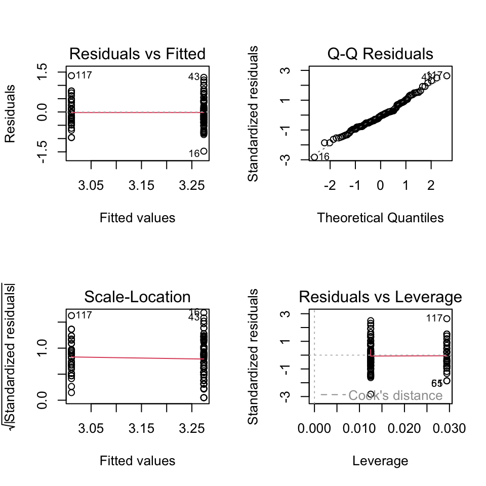
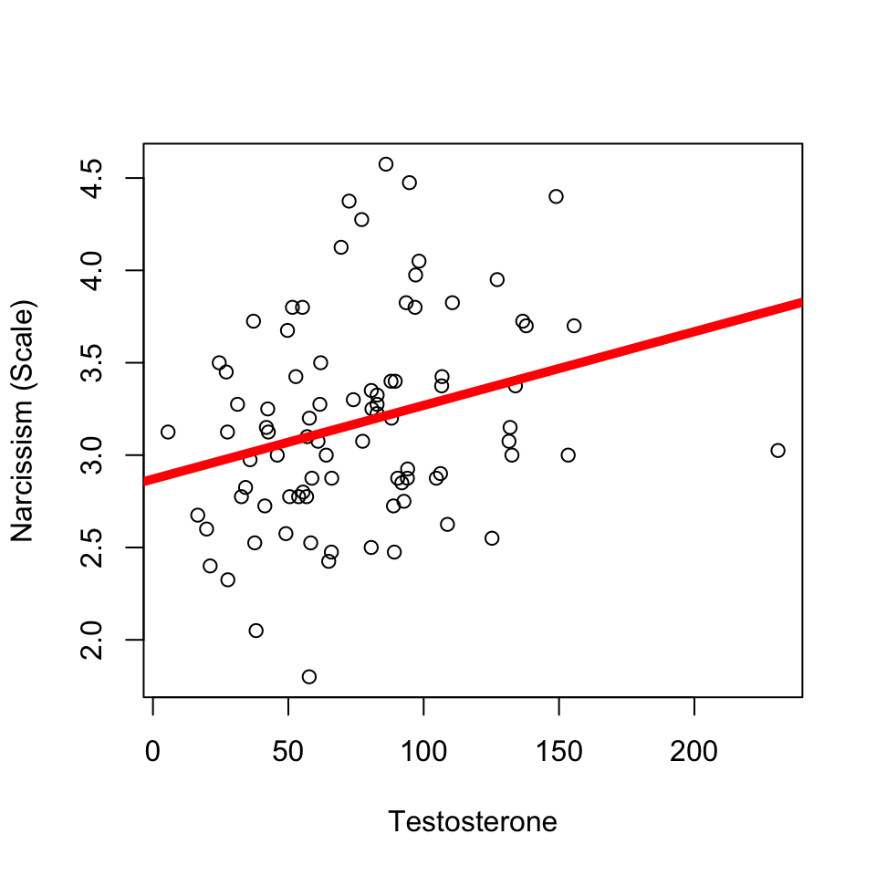
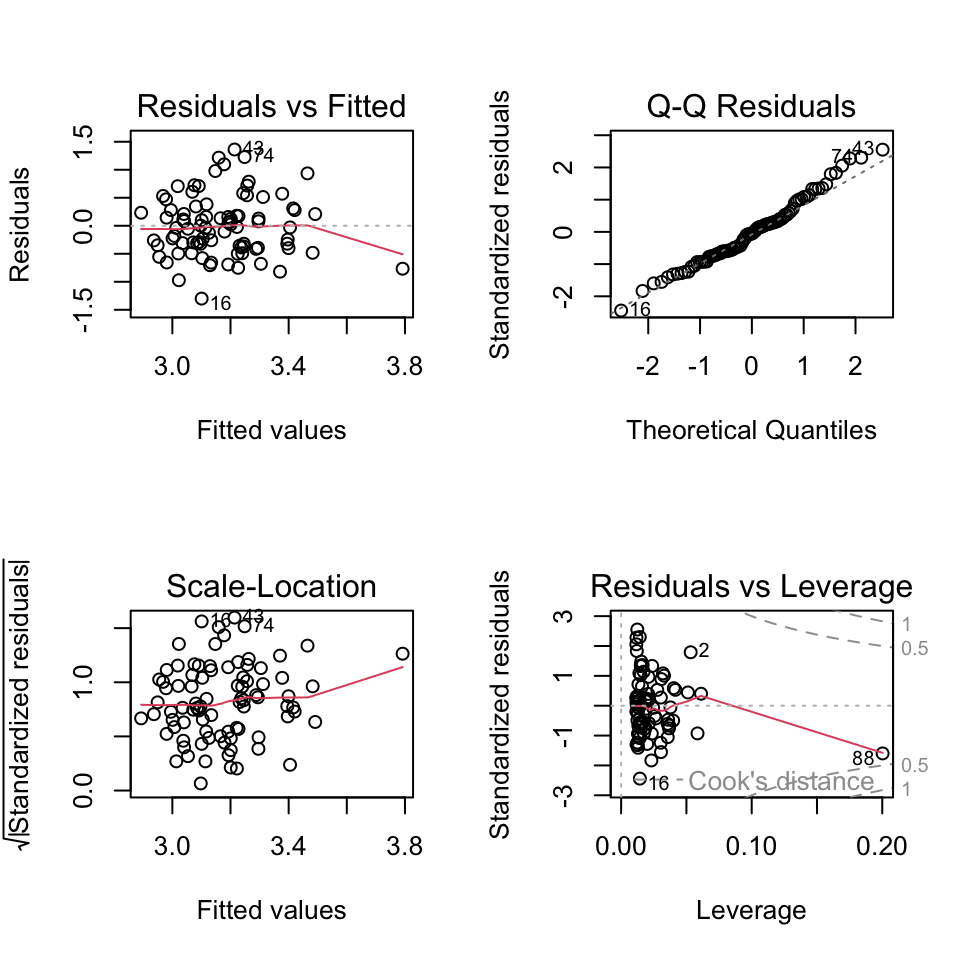
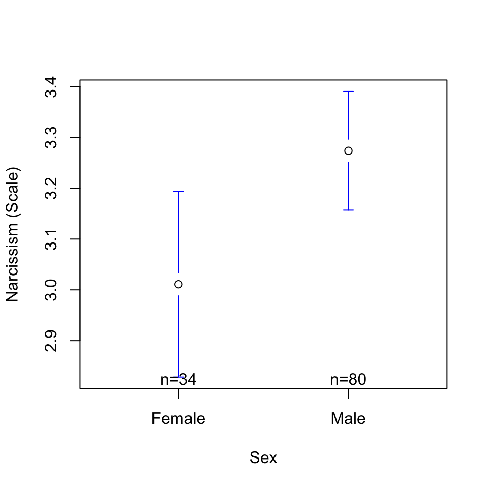
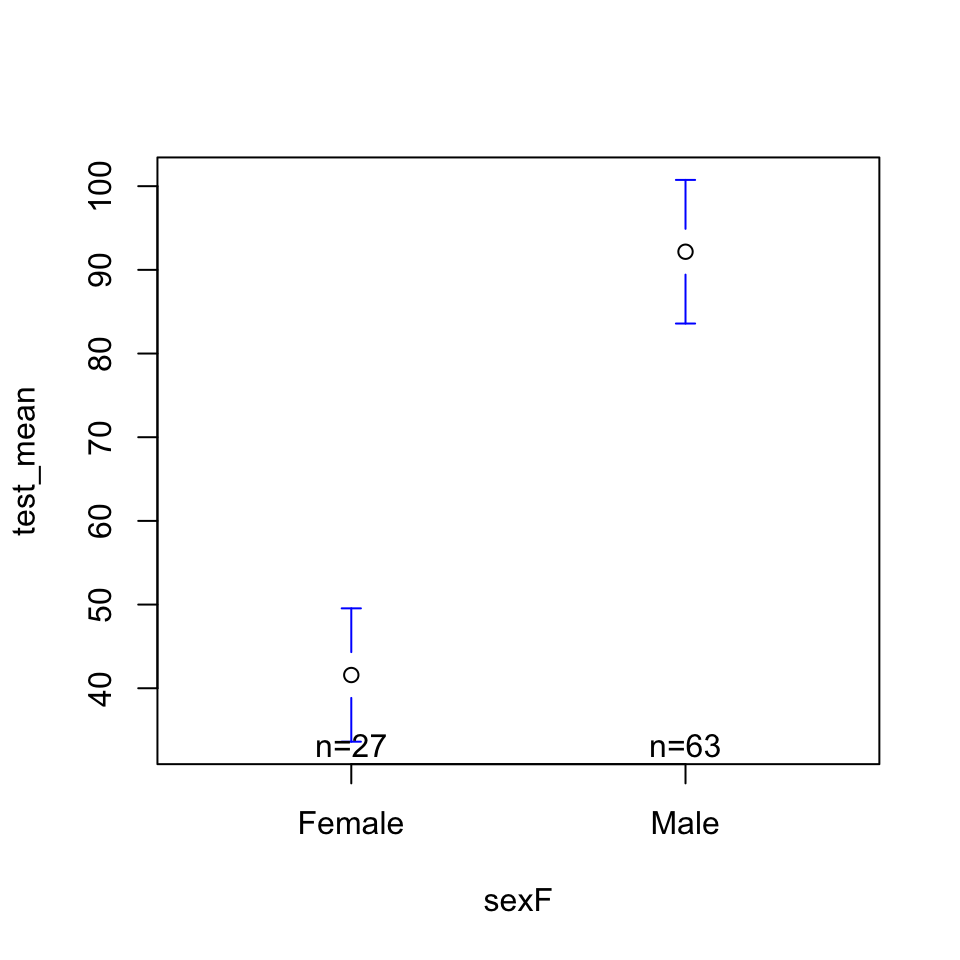

mod1 <- lm(narc_scale ~ sexF, data = d)
plotmeans(narc_scale ~ sexF, data = d, connect = F, xlab = "Sex", ylab = "Narcissism (Scale)")
(Click through the tabs to see the linear models.)
These data come from a study of Haas business students; we’ll focus on the following variables.
mod1 <- lm(narc_scale ~ sexF, data = d)
plotmeans(narc_scale ~ sexF, data = d, connect = F, xlab = "Sex", ylab = "Narcissism (Scale)")
export_summs(mod1, error_pos = "right",
coefs = c("Intercept" = "(Intercept)",
"Sex (Male)" = "sexFMale"), digits = 3)| Model 1 | ||
|---|---|---|
| Intercept | 3.011 *** | (0.090) |
| Sex (Male) | 0.263 * | (0.107) |
| N | 114 | |
| R2 | 0.051 | |
| *** p < 0.001; ** p < 0.01; * p < 0.05. | ||
par(mfrow = c(2,2))
plot(mod1)
mod2 <- lm(narc_scale ~ test_mean, data = d)
plot(narc_scale ~ test_mean, data = d, xlab = "Testosterone", ylab = "Narcissism (Scale)")
abline(mod2, lwd = 5, col = 'red')
export_summs(mod2, error_pos = "right",
coefs = c("Intercept" = "(Intercept)",
"Testosterone" = "test_mean"), digits = 3)| Model 1 | ||
|---|---|---|
| Intercept | 2.870 *** | (0.129) |
| Testosterone | 0.004 ** | (0.002) |
| N | 86 | |
| R2 | 0.077 | |
| *** p < 0.001; ** p < 0.01; * p < 0.05. | ||
par(mfrow = c(2,2))
plot(mod2)
Sex is related to narcissism.
mod1 <- lm(narc_scale ~ sexF, data = d)
plotmeans(narc_scale ~ sexF, data = d, connect = F, xlab = "Sex", ylab = "Narcissism (Scale)")
export_summs(mod1, error_format = "", error_pos = "right",
coefs = c("Intercept" = "(Intercept)",
"Sex (Male)" = "sexFMale"), digits = 3)| Model 1 | ||
|---|---|---|
| Intercept | 3.011 *** | |
| Sex (Male) | 0.263 * | |
| N | 114 | |
| R2 | 0.051 | |
| *** p < 0.001; ** p < 0.01; * p < 0.05. | ||
Testosterone is related to narcissism…
mod2 <- lm(narc_scale ~ test_mean, data = d)
plot(narc_scale ~ test1, data = d, xlab = "Testosterone", ylab = "Narcissism (Scale)")
abline(mod2, lwd = 5, col = 'red')export_summs(mod2, error_format = "", error_pos = "right",
coefs = c("Intercept" = "(Intercept)",
"Testosterone" = "test_mean"), digits = 3)| Model 1 | ||
|---|---|---|
| Intercept | 2.870 *** | |
| Testosterone | 0.004 ** | |
| N | 86 | |
| R2 | 0.077 | |
| *** p < 0.001; ** p < 0.01; * p < 0.05. | ||
but if testosterone is related to sex…
modx <- lm(test_mean ~ sexF, data = d)
plotmeans(test_mean ~ sexF, data = d, connect = F)
export_summs(modx, error_format = "", error_pos = "right")| Model 1 | ||
|---|---|---|
| (Intercept) | 41.58 *** | |
| sexFMale | 50.59 *** | |
| N | 90 | |
| R2 | 0.37 | |
| *** p < 0.001; ** p < 0.01; * p < 0.05. | ||
How are they uniquely related?
mod3 <- lm(narc_scale ~ sexF + test_mean, data = d)
export_summs(mod1, mod2, mod3, error_format = "", error_pos = "right", digits = 3,
coefs = c("Testosterone" = "test_mean",
"Sex (Male)" = "sexFMale"))| Model 1 | Model 2 | Model 3 | ||||
|---|---|---|---|---|---|---|
| Testosterone | 0.004 ** | 0.004 * | ||||
| Sex (Male) | 0.263 * | 0.020 | ||||
| N | 114 | 86 | 86 | |||
| R2 | 0.051 | 0.077 | 0.077 | |||
| *** p < 0.001; ** p < 0.01; * p < 0.05. | ||||||
What is the DV? What is the IV? What are some other variables you might want to include as control variables?
bucket <- array() # defines a space to save my work
for(i in c(1:1000)){ # repeating steps 1000 times & keeping track with i
newfolk <- sample(1:nrow(d), nrow(d), replace = T) # new index of individuals; same sample size as original data, but wiht replacement
newdata <- d[newfolk,] # new data, based on the new index
modX <- lm(DV ~ IV, data = newdata) # new model, based on new data
extrabucket[i] <- modX[2] # saving the slope (second term of the model)
}